TEMA 05
Tablas y formularios
Material de estudio organizado a partir del PDF correspondiente. Se conserva el contenido textual del documento y se distribuye por páginas para facilitar su consulta.
Página 1
Tablas y formularios
Página 2
1. Introducción y contextualización práctica
3
2. Tablas
4
2.1. Estructura típica de tabla
2.2. Atributos colspan y rowspan
3. Formularios
6
3.1. Método get y post
7
3.2. Atributos comunes
8
3.3. Controles
8
4. Caso práctico 1: “Actividades formativas”
13
5. Caso práctico 2: “Grupo de controles”
14
6. Resumen y resolución del caso práctico de la unidad
15
7. Webgrafía
16 cualquier medio o procedimiento, incluidos la reprografía y el tratamiento informático.
Página 3
1. Introducción y contextualización práctica
En temas anteriores, hemos trabajado con numerosas etiquetas que nos han permitido enriquecer el contenido de nuestra página web. En este tema veremos las tablas y los formularios. Con las tablas, podremos tabular información para que se muestre de una manera estructurada, gracias a las filas y a las columnas que las caracterizan y que, visualmente, nos van a proporcionar un contenido más organizado. Por otro lado, los formularios nos permitirán interactuar con el usuario, porque nos permitirán solicitar información que el usuario deberá introducir. La agencia de viajes solicita a WebMalagaDesign que cree un formulario para que los clientes puedan enviarles consultas. Escucha el siguiente audio donde planteamos la contextualización práctica de este tema. Encontrarás su resolución en el apartado «Resumen y resolución del caso práctico de la unidad». Crear tablas en el documento HTML. Conocer las etiquetas para trabajar con tablas. Conocer las etiquetas para crear formularios. https://bit.ly/3fwQO1d
Página 4
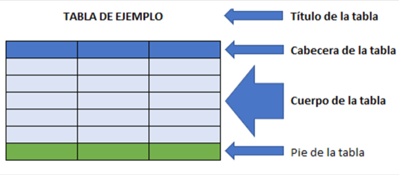
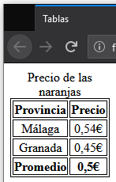
2. Tablas
Al igual que podemos trabajar con tablas en un procesador de textos para estructurar el contenido en filas y columnas, en HTML también tenemos la posibilidad de crear este elemento. La etiqueta que usaremos es <table>.
Podemos diferenciar las siguientes partes en una tabla:
• Título (<caption>): con el que identificamos el título de la tabla.
• Cabecera (<thead>): se identifican las celdas que van a formar parte de la cabecera de la tabla.
• Cuerpo (<tbody>): va a contener las celdas con el contenido de la tabla.
• Pie (<tfoot>): celdas que forman el pie de la tabla.
Como se observa en la tabla de la figura 1, tanto la cabecera, como el cuerpo, como el pie de tabla, contendrán una o más filas (<tr>), cada una de las cuales estará compuesta por celdas de datos (<td>) o celdas de cabecera (<th>).
Por lo tanto, una tabla típica puede ser la siguiente:
Por defecto, los navegadores, cuando detectan cabeceras en una tabla, suelen aplicarles un estilo diferente. En este caso, se muestra en negrita. En el siguiente apartado, mostramos cómo se ha realizado esta tabla, que tiene una estructura típica. Se ha aplicado cierto estilo con la etiqueta <style>. No te preocupes porque este código se explicará más adelante, cuando veamos CSS.
Página 5
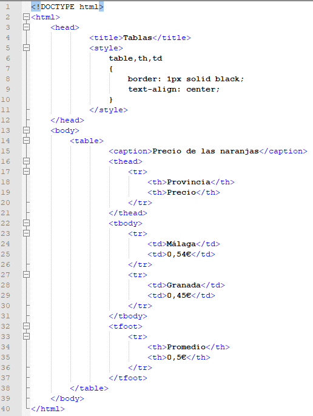
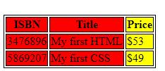
2.1. Estructura típica de tabla
Los elementos thead, tbody y tfoot nos sirven para agrupar una o varias filas. Si no necesitamos esta agrupación no es necesario incluirlos, y solo deberíamos indicar filas(<tr>), celdas de datos(<td>) y celdas de cabecera(<th>). Normalmente, las celdas de cabecera(<th>) se muestran en la cabecera(<thead>), pero pueden utilizarse en otros lugares de la tabla, como en este caso, en el que la hemos utilizado en el pie(<tfoot>).
2.1.1. Etiquetas <col> y <colgroup>
Estas etiquetas nos van a permitir agrupar columnas para identificar algunas que tengan un significado especial. Esto nos va a dejar colorear esas columnas para que destaquen del resto cuando le podamos aplicar estilos. Tanto en la figura 5, como en el siguiente enlace, puedes ver su uso con varios ejemplos.
2.2. Atributos colspan y rowspan
Estos atributos nos van a permitir unir celdas tanto horizontal como verticalmente. Cuando queramos unir celdas de manera horizontal usaremos colspan, y cuando la agrupación la necesitemos en vertical, usaremos rowspan. El número que asociemos a esos atributos indicará el número de celdas que queramos unir. Estos atributos están asociados con las etiquetas <td> y <th>.
Página 6
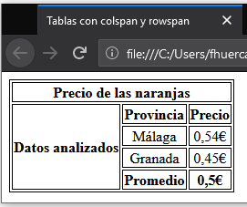
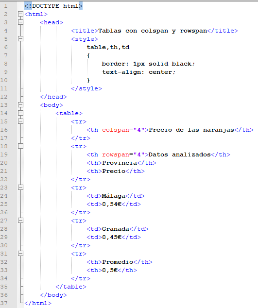
Siguiendo con el ejemplo anterior, si quisiéramos tener una primera fila combinada y una primera columna unida con
información común, tal y como se muestra en la siguiente imagen:
Tendríamos que codificar el siguiente documento HTML:
3. Formularios
Los formularios nos van a permitir agrupar una serie de controles para recoger información de los usuarios y enviarla a un servidor web para que este procese los datos. Un ejemplo típico sería un formulario de contacto de una página web. La etiqueta que engloba los controles es <form>. Se trata de un elemento de bloque, y puede contener otros
elementos HTML además de los propios de los formularios. Los atributos asociados más importantes son:
• action: aquí se indica la página web que va a recibir los datos que hemos introducido en el formulario.
Normalmente, se trata de una página web dinámica que contendrá un script con un lenguaje de programación del lado del servidor, como podría ser PHP (Hypertext Preprocessor).
Página 7
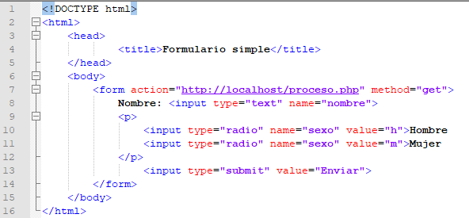
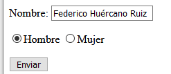
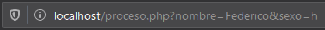
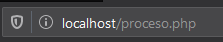
• method: se indica de qué manera se va a enviar la información. Puede ser de dos tipos:
» get: la información aparece en la propia llamada de la página web; por lo tanto, los datos se pueden ver en la URL. Estos datos no deben ser sensibles, porque serán públicos. Este es el método por defecto, si no se indica ninguno. » post: la información se envía de manera oculta. En los próximos apartados, detallaremos cada uno de los controles incluidos en este ejemplo. Lo importante ahora es conocer el comportamiento de los atributos action y method de form, que provocan, que al clicar el botón «Enviar», se envíen los datos introducidos al fichero «proceso.php».
3.1. Método get y post
Como observamos en el ejemplo anterior, el fichero que se encuentra en el servidor y que procesará la información enviada desde el cliente es proceso.php. Si utilizo el método de envío get, al hacer clic sobre el botón «Enviar»,
observaremos en la dirección URL la siguiente llamada:
Como se puede observar, aparece el nombre del fichero del servidor y la información que se ha completado en el formulario. La separación entre el fichero de procesamiento y los campos se hace con el carácter ‘?’. Cuando se envía más de un dato en el formulario, se separan con el carácter ‘&’. En el caso de que el método utilizado sea post, la
llamada sería así:
Audio 1. “Lenguajes del lado cliente y del lado del servidor” https://bit.ly/3enxKm9
Página 8
En este caso, la información viaja oculta y no aparece en la barra del navegador. Por lo tanto, hay que usar post cuando no queramos que los datos enviados sean visibles.
3.2. Atributos comunes
Las etiquetas que pueden utilizarse dentro del formulario dispondrán de atributos comunes aparte de los específicos
de cada etiqueta. Los listamos a continuación:
• type: indica el tipo de control.
• name: identifica al control de manera única.
• value: permite dar un valor inicial al control.
• required: se indica que el campo es obligatorio. Hasta que no se complete no se podrá enviar el formulario.
• size: tamaño del control a la hora de su visualización en el navegador.
• maxlength y minlength: se indica la longitud máxima y mínima en caracteres que puedo escribir en un control.
• autofocus: se indica qué control es el que tendrá el foco cuando se visualice el formulario.
• disabled: permite deshabilitar el control. Aparecerá en un tono gris y no nos permitirá acceder al mismo.
Tampoco podrá coger el foco.
• readonly: El control no puede ser modificado, aunque sí puede coger el foco.
• tabindex: nos permite indica el orden de los controles cuando usamos el tabulador.
3.3. Controles
En este apartado, vamos a detallar los controles que se pueden usar en un formulario e indicaremos sus atributos principales.
3.3.1. Botones
Este tipo de controles nos va a permitir interactuar con el formulario, permitiendo la ejecución de un script, el envío de los datos, o el borrado de los mismos. Control Etiqueta Función Atributo Botón <input> Nos permite crear un botón al que le podremos asociar una funcionalidad, normalmente con Javascript type=”button” Botón de envío <input> Es un tipo de botón especial que nos va a permitir enviar los datos del formulario al fichero de procesamiento en el servidor. type=”submit” Botón de borrado <input> Este botón nos va a permitir borrar toda la información incluida en el formulario y muestra los valores iniciales. Si los controles del formulario no tienen esos valores iniciales los pondrá en blanco. type=”reset” Tabla 1. Tabla 1. Tipos de botones.
Página 9
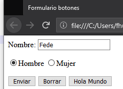
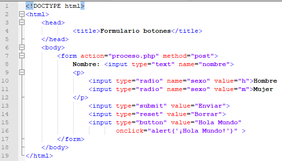
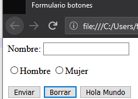
En los ejemplos de las figuras 13 y 14, al pulsar en el botón «Enviar», se enviarían al servidor los datos introducidos. Al pulsar «Borrar» se dejarían en blanco. En el caso del botón «Hola Mundo», se ha introducido código en Javascript.
Míralo en el siguiente vídeo:
3.3.2. Cajas de texto
Este tipo de control nos va a permitir introducir texto que solo ocupe una línea o varias (según la etiqueta que usemos). Vídeo 1. “Uso de botones” https://bit.ly/3fE4Kqt Control Etiqueta Función Atributo Caja de texto alfanumérica <input> Nos permite introducir texto alfanumérico. type=”text” Contraseña <input> Es un tipo especial de caja de texto que cuando escribimos aparecen caracteres tipo *, que nos oculta lo que se está escribiendo. type=”password” Área de texto <textarea> Este control nos va a permitir introducir más de una línea de texto Atributos rows y cols: Indica las filas y columnas iniciales del área de texto, porque se pueden ampliar si arrastramos la esquina inferior derecha de la caja de texto. Tabla 1. Tabla 2. Tipos de cajas de texto.
Página 10
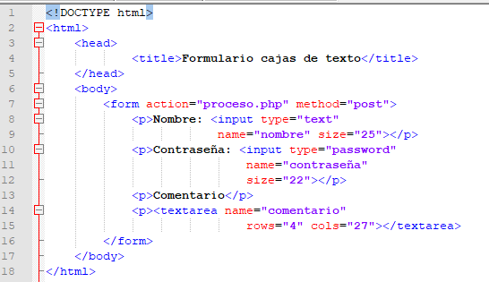
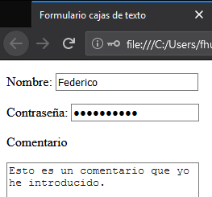
Observa cómo es su comportamiento en el ejemplo siguiente:
3.3.3. Casilla de verificación
Este control nos va a permitir elegir entre varias opciones y poder marcar una o varias. Control Etiqueta Función Atributo Casilla de verificación <input> Permite marcar o desmarcar casillas. type=”checkbox”. checked: se indica si inicialmente se desea que el checkbox esté marcado. En este caso no es necesario seguir la sintaxis atributo=valor. Si queremos que esté marcada la casilla se indica simplemente escribiendo checked. Atributo value: si no se indica un valor con el atributo value se enviaría el valor on. En caso contrario, se enviaría el valor que se haya indicado en value. Si no se marca la casilla, no se enviaría nada. Tabla 1. Tabla 3. Casilla de verificación.
Página 11
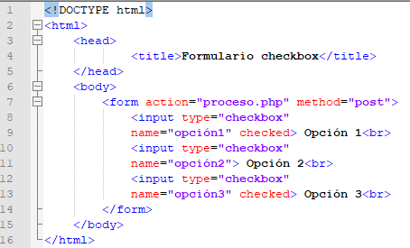
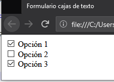
En el ejemplo siguiente, observa cómo se ha usado el control checked para marcar 2 opciones de 3 posibles:
3.3.4. Botones radio
Este control nos permite elegir entre varias opciones, normalmente excluyentes. Tabla 1. Tabla 4. Botones de radio. Control Etiqueta Función Atributo Botones de radio <input> Este control normalmente se usa en un grupo de opciones donde se elegirá solo una. Al elegir una opción, el resto se desmarca. type=”radio”. Atributo name: para que los botones radio formen un grupo y las opciones sean excluyentes, el nombre de todos los botones radio tiene que ser el mismo. Atributo value: si no se indica un valor con el atributo value se enviaría el valor on. En caso contrario, se enviaría el valor que se haya indicado en value. Si no se marca la casilla, no se enviaría nada. Atributo checked: se puede utilizar al igual que con las casillas de verificación para marcar una opción.
Página 12
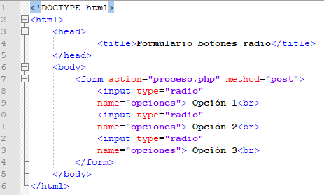
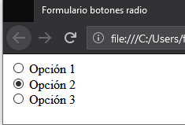
Veámoslo en un ejemplo:
3.3.5. Listas despegables
Nos permite mostrar una lista de opciones cuando pulsamos en el control. Tabla 5. Listas desplegables. Control Etiqueta Función Atributo Lista despegable <select> Mostrar opciones en una lista. Las opciones se tienen que colocar dentro de <select> y se indican con la etiqueta <option>. Atributo size: se asocia a la etiqueta <select> e indica la altura del control. Atributo value: se asocia a la etiqueta <option> e indica el valor de la opción seleccionada. Atributo selected: se asocia a la etiqueta <option> e indica la opción seleccionada por defecto.
Página 13
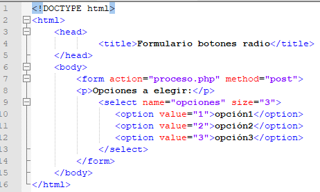
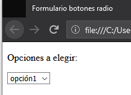
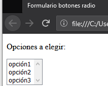
Observa cómo se han utilizado los desplegables tanto en el ejemplo siguiente, como en el vídeo posterior:
4. Caso práctico 1: “Actividades formativas”
Planteamiento: Alberto quiere incluir en la intranet de la empresa una tabla con los horarios de algunos cursos que se quieren impartir.
Nudo: se reúne con Gloria y le comenta lo que necesita. La tabla debe contener:
• El título de la tabla: ACTIVIDADES FORMATIVAS.
• Una segunda fila que contenga la cabecera donde aparecerá el nombre del curso, el horario y las horas
de duración.
• Introducir los siguientes cursos en el cuerpo de la tabla.
» Curso de HTML de 20 horas de 16:00 a 20:00 Vídeo 2. “Uso de listas despegables” https://bit.ly/2USfPMx
Página 14
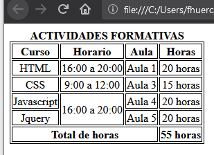
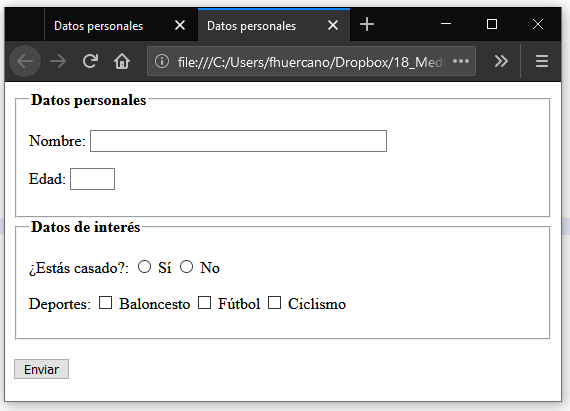
» Curso de CSS de 15 horas de 9:00 a 12:00 » Curso de Javascript de 20 horas de 16:00 a 20:00 » Curso de Jquery de 20 horas, comparte horario con el curso de Javascript.
• En el pie de la tabla se debe mostrar el total de horas.
Desenlace:
Puedes observar una representación de la solución en la figura 24, tal y como se visualizaría en el navegador. El código correspondiente lo encontrarás en el anexo del tema. Solución completa: Lenguaje de marcas-tema5-Anexos
5. Caso práctico 2: “Grupo de controles”
Planteamiento: Gloria, mientras buscaba información en internet, ha visto en algunas páginas que los controles de un formulario se pueden agrupar. Nudo: se lo comenta a Alberto y este le dice que haga un pequeño manual de cómo se haría, incluyendo un ejemplo. Desenlace: un grupo de controles permite agrupar los controles que podemos incluir en un formulario, de acuerdo
al siguiente comportamiento:
Puedes observar una representación de la solución del caso en la figura 25, tal y como se visualizaría en el navegador. El código correspondiente lo encontrarás en el anexo del tema. Solución completa: Lenguaje de marcas-tema5-Anexos Control Etiqueta Función Grupo de controles <fieldset> Permite agrupar controles. En el navegador se mostrarán rodeados de una línea y se mostrará el título que le asignemos a ese grupo de controles. La primera etiqueta que hay que incluir en el grupo es <legend>, que dará el título al grupo de controles. Tabla 1. Tabla 6. Grupo de controles.
Página 15
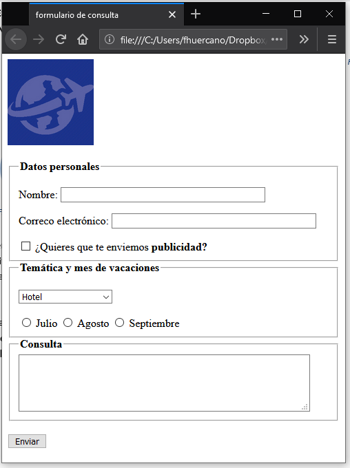
6. Resumen y resolución del caso práctico de la unidad
En este tema, hemos trabajado con tablas y formularios. Las tablas nos permiten estructurar el contenido en filas y podemos destacar algunas celdas para que formen parten de la cabecera y del pie de la tabla. Por otro lado, los formularios nos permiten recabar información del usuario y enviar esos datos al servidor para su procesamiento. Para ello, se utilizan lenguajes del lado del servidor como PHP. Resolución del caso práctico de la unidad Una de las visualizaciones que puede adoptar el formulario encargado por el cliente Sol y Mar es la que se muestra en la figura 27. El código correspondiente lo encontrarás en el anexo del tema. Solución completa: Lenguaje de marcas-tema5-Anexos FORMULARIOS Metodo get Metodo post Controles Fieldset TABLAS <colspan> <rowspan> TABLAS Y FORMULARIOS
Página 16
7. Webgrafía
Escuela de HTML: W3schools. Tecnología web para desarrolladores: Mdn. World Wide Web Consortium (W3C). W3C. Referencia y novedades HTML. Html Living Standard